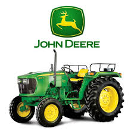
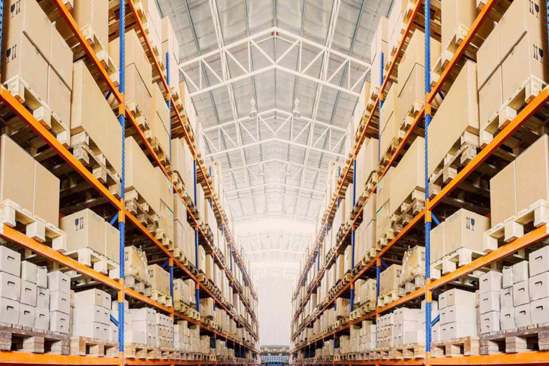
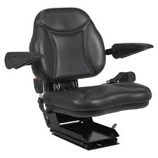
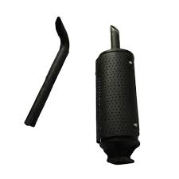
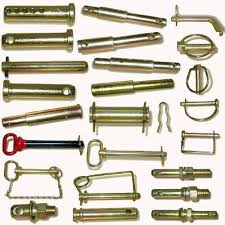
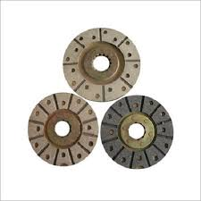
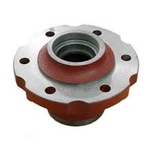
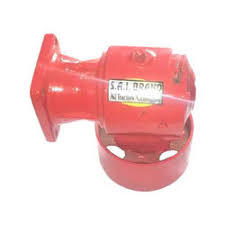
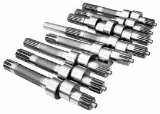

PARTS

All John Deere genuine parts are designed and manufactured with
strict factory standards in order to
keep your John Deere machinery operating at peak performance year
after year.

Our parts are repeatedly tested before
they go into the market.
John Deere only delivers high quality
parts and by using them,
your John Deere will always be at it's best.
A comprehensive range of John Deere genuine
parts can be accessed via our national
dealer network. Our dealers stock a variety
of consumable and off-the-shelf parts in
order to provide John Deere customers with a
superior level of service and support.
For safety, reliability, efficiency and warranty,
always choose John Deere genuine spare parts.
Parts Available :
- Tractor Seats

- Silencer

- Linkage Parts

- Brake Plates

- Hub

- Pto Pulley

- Shafts

Parts supply depot :
- Chennai
- Pune
- Cuttack
SERVICES
John Deere and its dealers are committed
to providing quality service to meet
your needs.
At John Deere, we offer our services and support through our
authorised countrywide dealership network. We strive to
always put customers as our top priority and provide
excellent services.
All our service technicians are factory trained and draw upon
years of industry experience. They are regularly trained to
assure speed of delivery and quality to minimize any effect on
customer's business.
At John Deere, we strive to be No.1 in achieving customer satisfaction.
John Deere offers free services only during the warranty period for all its products.
- The services to be availed within the specified hours or days from the date of sale
of machine whichever occurs first.
- It is mandatory to avail all free and paid services as per the given schedule.
- The services can be availed only at our John Deere authorized dealership center.
- For the free service, the labour cost for doing periodic maintenance is free.
Cost of oil, gaskets and other jobs requested by customer which
are not covered in the periodic maintenance schedule are chargeable.
- If your machine meets with an accident during the free services period, then the cost for
the actual labour and parts has to be borne entirely by the customer.